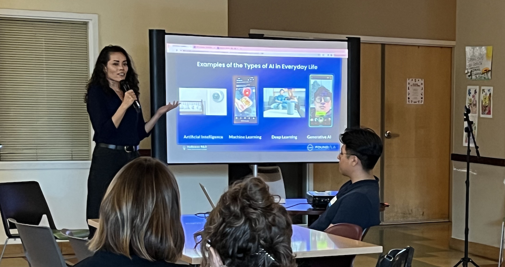
Los Angeles Cleantech Incubator (LACI): Speaker on Leveraging AI to Drive Business Growth
Shannon Holloway upskilling founders on applied AI fundamentals.
I integrate complex systems where frontier engineering and precision investment meet human performance.

Shannon Holloway upskilling founders on applied AI fundamentals.
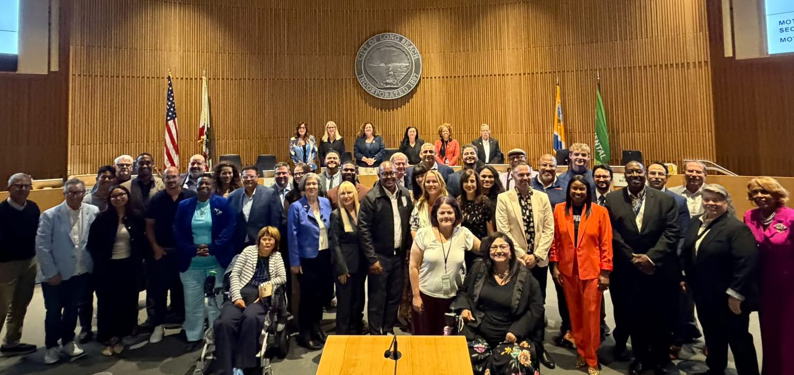
Shannon Holloway serving as an appointed Commissioner advising City Council.
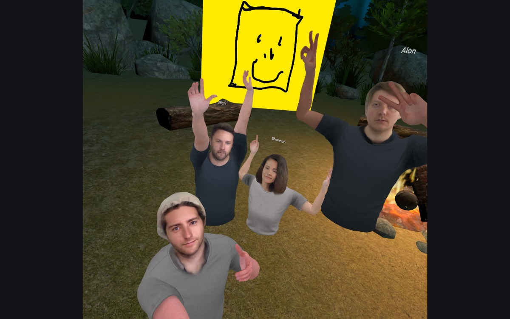
Benjamin Hersh, Richard Smith, Shannon Holloway and Alon Hetzroni collaborating in virtual reality.
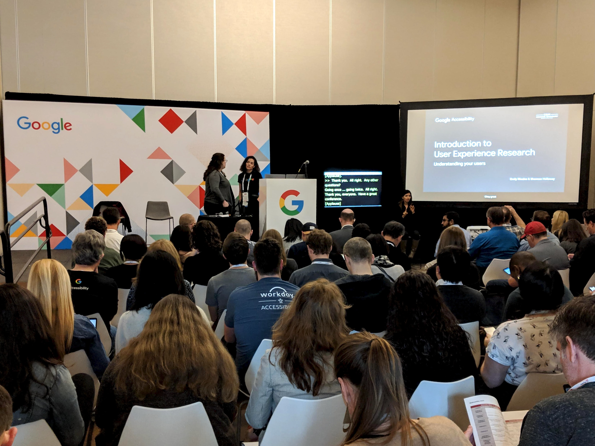
Emily Rhodes and Shannon Holloway upskilling industry practitioners on applied research frameworks.
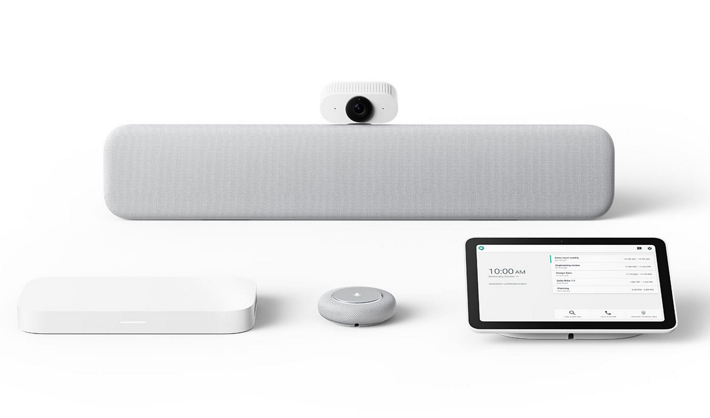
Human factors engineering for enterprise video conferencing systems.
Launch go/no-go validation of ML confidence thresholds and release criteria.
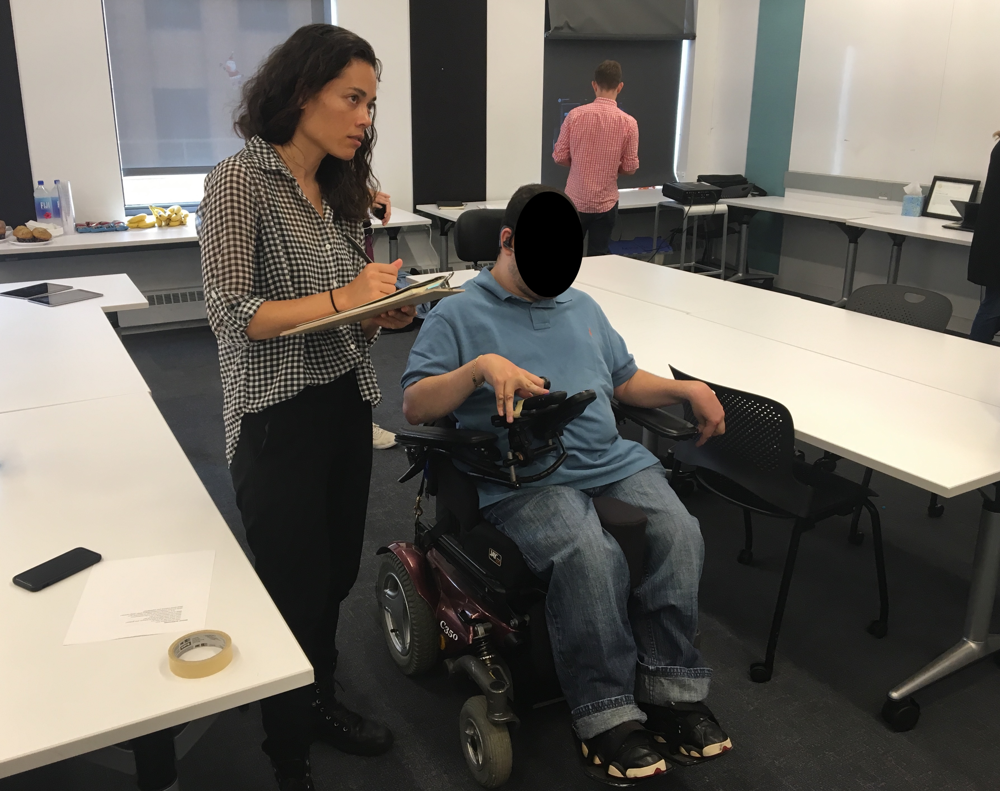
Shannon Holloway conducting usability evaluations with a participant with motor impairments.
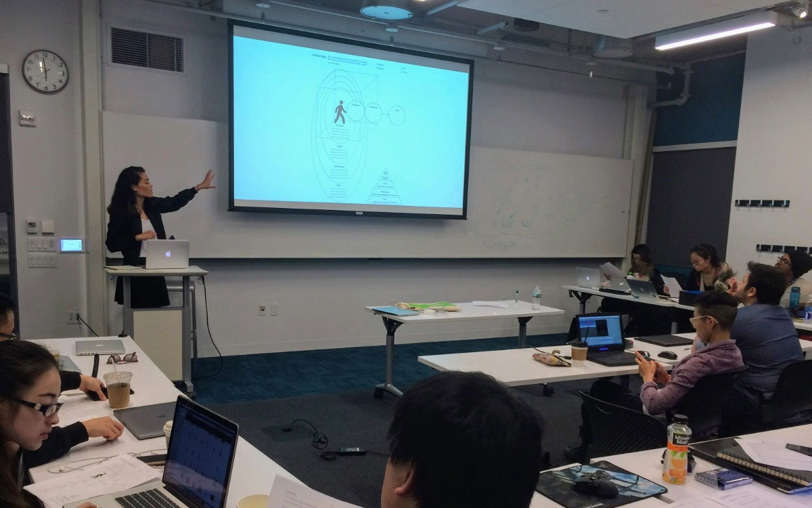
Shannon Holloway leading graduate students through applied research frameworks.
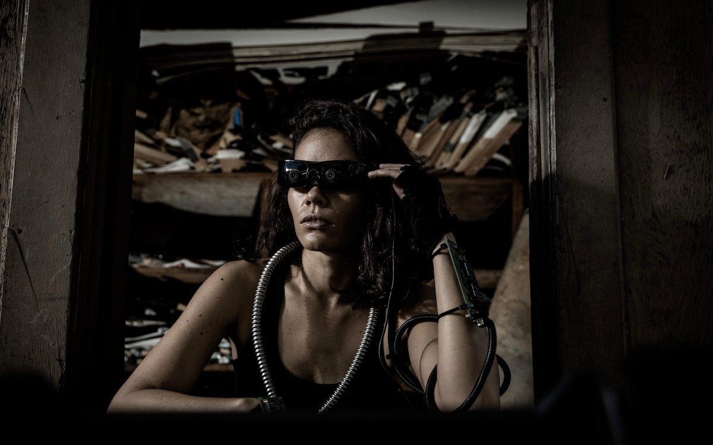
Prototype by Shannon Holloway. Photography by Argun Tekant.
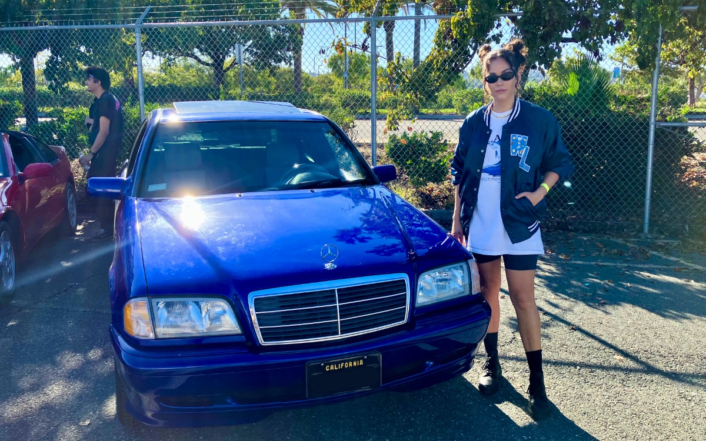
Restoration by Shannon Holloway.
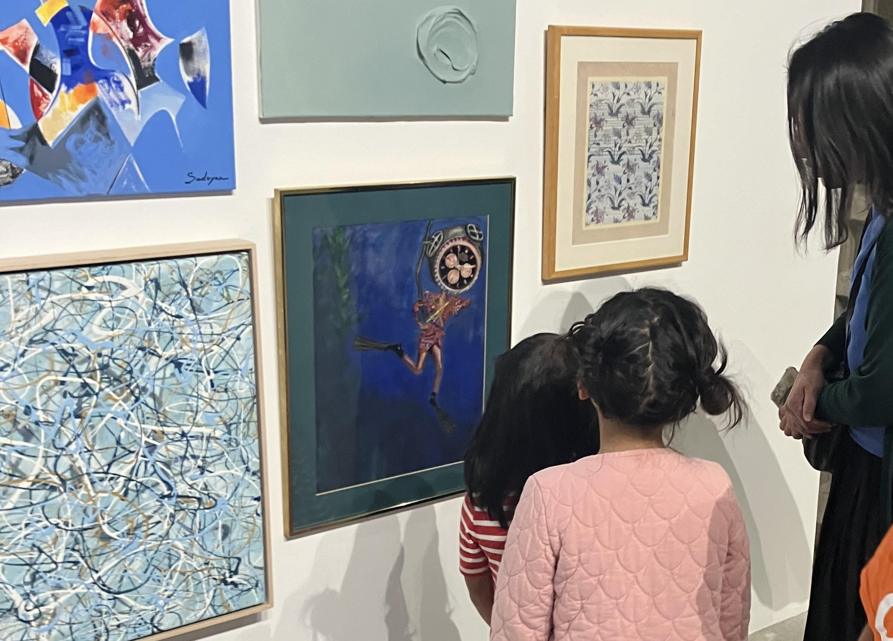
Mixed media on paper by Shannon Holloway.
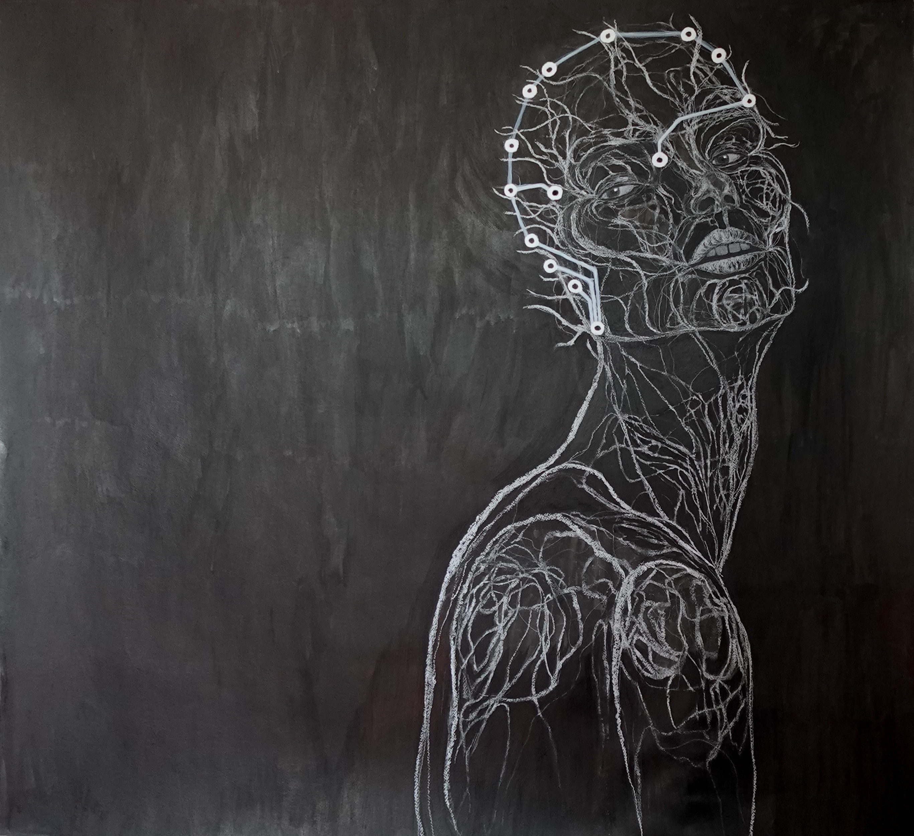
Mixed media on paper by Shannon Holloway.